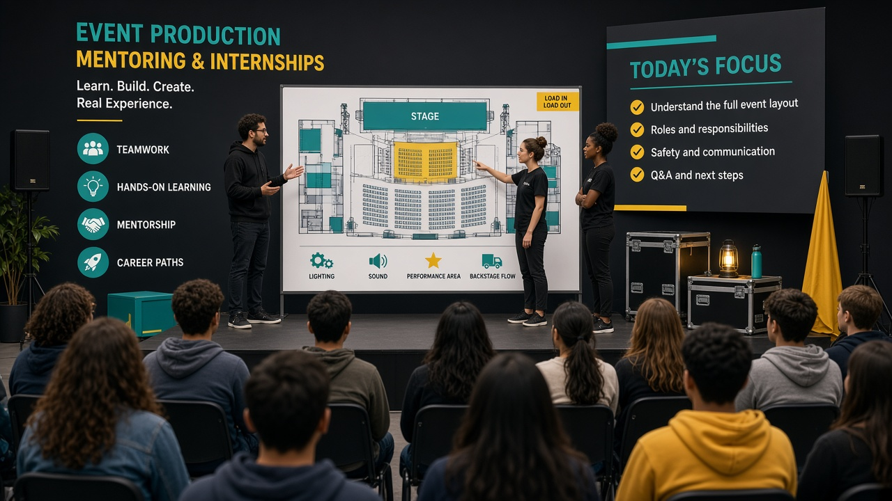

Для агентства · HR
Как агентству брать студентов БГУ, БГЭУ и БГУИР без хаоса

Студенты Минска — быстрый ресурс для event: энергия, цифровая грамотность, готовность учиться. Они же — источник хаоса, если агентство пускает набор «через сторис» без ролей и календаря. Ниже — рабочая схема, которой Eventerra делится как практикой: как брать людей из БГУ, БГЭУ, БГУИР и смежных вузов так, чтобы площадка не превращалась в экскурсию.
Почему «просто возьмём волонтёров» ломается
- Сессия и дедлайны курсовых внезапно выбивают половину команды.
- Нет описания роли — студент импровизирует в зоне гостей.
- Слишком много стажёров на одного куратора.
- Нет правил фото/данных — риск для клиента.
Воронка отбора без бюрократии
- Короткая заявка. Вуз, курс, расписание, опыт, зачем event.
- 15-минутный созвон. Проверка речи, ответственности, совпадения ожиданий.
- Пробная задача. Например, черновик чек-листа регистрации — не эссе о мечте.
- Пробный ивент. Одна роль, один куратор, разбор после.
- Решение. Продолжаем / пауза до конца сессии / не подходит формат.
Онбординг за один час
Минимум, который снижает хаос: карта ролей, цепочка эскалации, дресс-код, что нельзя обещать гостю, где хранятся контакты, что писать в отчёт для вуза. Студенту БГУИР может быть ближе техкоординация и цифры, студенту БГЭУ — маркетинг касаний, студенту БГУ (гуманитарные/коммуникации) — тексты и работа с людьми. Не стереотипируйте жёстко — но давайте роль под сильные стороны.
Совместимость с учёбой
| Правило | Зачем |
|---|---|
| Лимит событий в месяц | Меньше внезапных отвалов |
| Красные даты вуза в общем календаре | Планирование смены |
| Один куратор на 3–5 стажёров | Реальная обратная связь |
| Шаблон «заметки дня X» | Отчёты по практике без паники |
Метрики, что процесс работает
- Доля стажёров, дошедших до второго мероприятия.
- Количество эскалаций «мимо куратора» (должно падать).
- Субъективная оценка продюсера: «помог / нейтрален / мешал».
- Сданные в срок учебные отчёты — косвенный признак порядка.
Брать студентов без хаоса — значит проектировать вход так же внимательно, как вход гостей на площадку. Eventerra рассматривает стажировку как часть продукта агентства, а не как «бесплатные руки». Тогда выигрывают и вуз, и клиент, и сам студент.
Студентам: если хотите попасть в понятный процесс практики — напишите Eventerra.